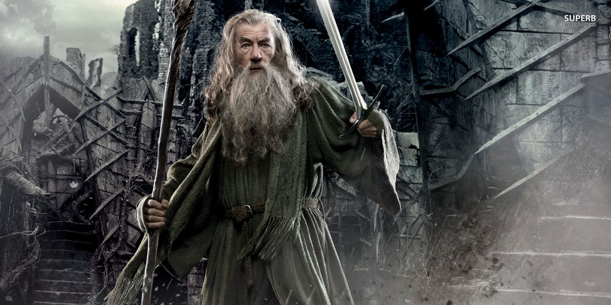

Gandalf es un mago legendario de la saga del señor de los anillos y el hobbit, entre otros.
Es reconocido por sus aventuras con sus aliados, desde la montaña desolada con el dragon Smaug, las minas
de Moria con el Balrog y la misma batalla en Mordor, en la puerta negra. Su evolucion de mago gris a mago blanco
le brindo mayor fuerza y conocimientos, volviendose el lide de su orden.
La tierra media lo aprecia por guiar a los heroes Aragon, Frodo, Boromir, Faramir, Sam y hasta el mismo Bilbo Bolson,
los cuales lidian con el anillo de poder de Sauron, el mayor enemigo de la tierra media y los reinos humanos, Rohan y Gondor.
Sin duda, su presencia es bienvenida donde sea, Leal y listo para la aventura.
100/10 el mejor heroe de toda las historias.
"The world is not in your books and maps, its out there"
Peliculas:
Por que este heroe? Desde pequeño e sido fan de esta saga, y por que Gandalf me recuerda a mi abuelo por ser un gran maestro, mentor, amigo y muchas cosas mas.
Juan Carlos Lopez Leon, 8:46 18/02/2022
Pagina de diseñador